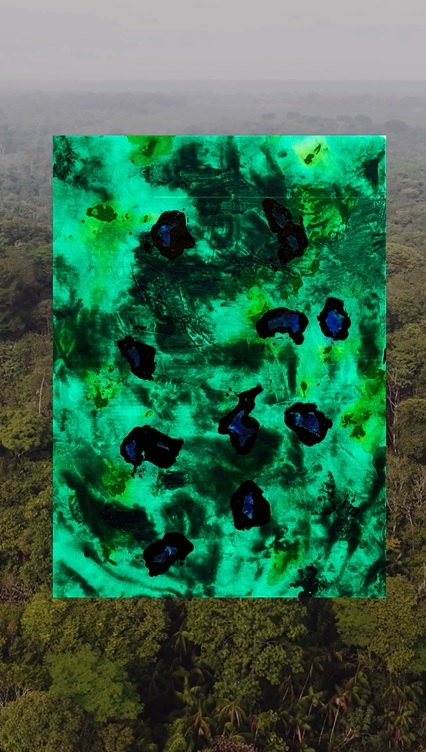

Umabali Granado Diaz
N. 1992 / VE
Curso estudios de Bellas artes en Universidad Centroocidental y Universidad Nacional de La Plata, cursa actualmente la carrera de Artes Multimediales. Trabaja con distintos medios como la pintura y el dibujo, tambien creando con herramientas como CSS, p5.js y inkScape, para crear distintos tipos de recursos visuales.
